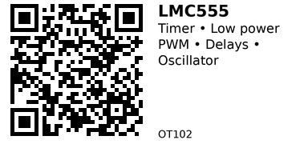

LMC555 CMOS 555 Timer - OT102¶
A CMOS version of the classic 555 timer IC. Generates accurate time delays (monostable mode) or oscillating waveforms (astable mode) using external resistors and capacitors. Compared to the bipolar NE555/LM555, the LMC555 uses much lower supply current (~100 µA vs ~5 mA) and works with wider voltage range (1.5V-12V vs 4.5V-15V). Pin-compatible drop-in replacement for NE555/LM555 in most circuits.
Key Specifications¶
- Supply Voltage: 1.5V - 12V (vs 4.5V-15V for bipolar 555)
- Supply Current: ~100 µA typical (vs ~5 mA for NE555)
- Operating Modes: Monostable (one-shot) or Astable (oscillator)
- Maximum Frequency: ~3 MHz
- Output Current: ±100 mA (can drive small loads directly)
- Package: 8-pin DIP (MDIP), also SOIC
- Operating Temperature: -40°C to +85°C
- Technology: CMOS (low power, rail-to-rail output)
Pinout¶
| Pin | Name | Description |
|---|---|---|
| 1 | GND | Ground |
| 2 | TRIG | Trigger input (starts timing cycle, active LOW) |
| 3 | OUT | Output (high or low depending on state) |
| 4 | RESET | Reset (active LOW, tie to VCC if unused) |
| 5 | CTRL | Control voltage (optional, typically 0.01 µF to GND) |
| 6 | THR | Threshold (stops timing cycle when voltage exceeds 2/3 VCC) |
| 7 | DISCH | Discharge (open-collector output for timing capacitor) |
| 8 | VCC | Power supply (1.5-12V) |
Notes:
- Pin-compatible with NE555, SE555, LM555 (bipolar versions)
- Pin 4 (RESET) must be HIGH for normal operation (tie to VCC if not used)
- Pin 5 (CTRL) usually connected to GND via 0.01 µF capacitor to reduce noise
Wiring¶
Astable Mode (Oscillator/Blinker)¶
Generates continuous square wave output. Frequency and duty cycle set by R1, R2, C1.
VCC (8) ----+---- VCC
|
R1
|
+---- THR (6)
| |
R2 C1
| |
DISCH (7) --+ |
|
GND --+
TRIG (2) ---- THR (6) (tied together)
RESET (4) --- VCC
CTRL (5) ---- 0.01µF ---- GND
OUT (3) ----- Load (LED, etc.)
GND (1) ----- GND
Frequency: f = 1.44 / ((R1 + 2×R2) × C1)
Duty Cycle:
- HIGH time = 0.693 × (R1 + R2) × C1
- LOW time = 0.693 × R2 × C1
Example values: - R1 = 1kΩ, R2 = 10kΩ, C1 = 0.1µF → f ≈ 688 Hz
Monostable Mode (One-Shot Timer)¶
Generates single pulse of fixed duration when triggered.
VCC (8) ---- VCC
RESET (4) -- VCC
CTRL (5) --- 0.01µF --- GND
TRIG (2) --- Trigger input (falling edge)
THR (6) ---- R1 ---- VCC
|
C1
|
DISCH (7) ---+
|
GND
OUT (3) ---- Load
GND (1) ---- GND
Pulse width: T = 1.1 × R1 × C1
Example values: - R1 = 100kΩ, C1 = 10µF → T ≈ 1.1 seconds
Usage Notes¶
When to Use¶
Use this component when:
- Need simple timing/delay without microcontroller code
- Generating PWM or clock signals for other circuits
- Debouncing switches (monostable mode)
- LED blinker, buzzer, metronome (astable mode)
- Low-power battery applications (CMOS draws ~100 µA vs ~5 mA for bipolar 555)
Don't use when:
- Need precise frequency control (use microcontroller PWM or crystal oscillator instead)
- Timing intervals >1 minute (large RC values drift with temperature)
- Need >100 mA output current (use external transistor/MOSFET driver)
Common Issues¶
- Oscillation stops or irregular: Check that RESET (pin 4) is tied HIGH (VCC). Floating RESET can cause erratic behavior.
- Frequency drifts with temperature: Use low-tempco resistors and capacitors (film caps better than electrolytic).
- Output won't go fully HIGH/LOW: CMOS outputs swing rail-to-rail, but check load impedance. High loads may sag output voltage.
- Won't work at low voltage: LMC555 works down to 1.5V, but verify supply is stable and noise-free.
Code Examples¶
Arduino/ESP32 Trigger Example¶
Use ESP32 to trigger LMC555 in monostable mode:
// ESP32 triggers LMC555 monostable timer
const int triggerPin = 23; // Connected to TRIG (pin 2)
void setup() {
pinMode(triggerPin, OUTPUT);
digitalWrite(triggerPin, HIGH); // TRIG is active LOW
}
void loop() {
// Trigger timer (falling edge starts pulse)
digitalWrite(triggerPin, LOW);
delayMicroseconds(10); // Short LOW pulse
digitalWrite(triggerPin, HIGH);
delay(2000); // Wait before next trigger
}
Note: In most cases, LMC555 is used standalone (no microcontroller needed) with external RC components setting timing. The above example shows how to trigger it from a microcontroller if needed.
Links¶
- Datasheet: Texas Instruments LMC555
- Purchase: LMC555CN (Jameco)
- Tutorial: 555 Timer Basics (Electronics Tutorials)
- Calculator: 555 Timer Calculator
